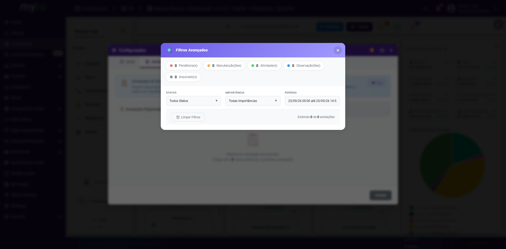
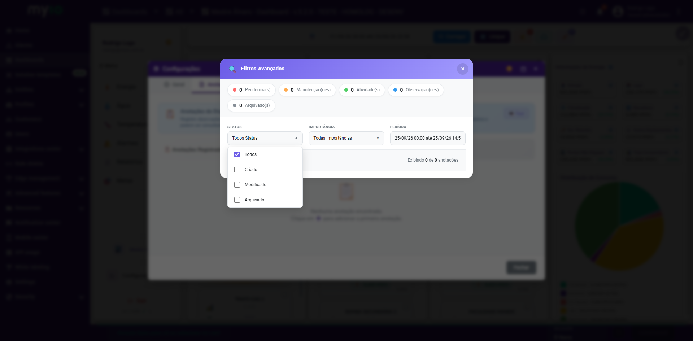

Visão geral
Anotações são registros de texto associados a um dispositivo — pendências, manutenções, atividades ou observações — que ficam salvas no histórico e podem ser consultadas a qualquer momento por qualquer pessoa com acesso ao dashboard.
Como acessar
- De um dispositivo específico: abra as Configurações do dispositivo (ícone ⚙️ no card) → aba Anotações.
- Todas as anotações do cliente: passe o mouse sobre ✏️ Anotações operacionais no cabeçalho, ou clique para filtrar o dashboard.
Criando uma anotação
Clique em + Nova Anotação e preencha texto, tipo e importância (1 a 5).
| Tipo | Uso |
|---|---|
| Pendência | Algo que precisa de ação/resolução |
| Manutenção | Atividades de manutenção, programada ou corretiva |
| Atividade | Atividades gerais, não necessariamente um problema |
| Observação | Informações e observações gerais |
Ciclo de vida de uma anotação
Toda anotação tem um status:
- Criado — estado inicial.
- Modificado — após qualquer edição.
- Arquivado — fora da visão ativa, mas preservada no histórico.
Filtros Avançados
Abra a modal Filtros Avançados para refinar a lista:

Chips de contagem por tipo
🔴 Pendência(s) · 🟠 Manutenção(ões) · 🟢 Atividade(s) · 🔵 Observação(ões) · ⚫ Arquivado(s) — clique em um chip para filtrar por aquele tipo (ou pelas arquivadas); clique de novo para remover o filtro.
Status e Importância
Dois seletores multi-marcação: Status (Todos/Criado/Modificado/Arquivado) e Importância (1 a 5).

Período
Um seletor de intervalo de datas restringe a lista às anotações criadas naquele período.
Use Limpar Filtros para voltar ao padrão (tudo visível).
Exportando anotações
PDF gera um relatório das anotações filtradas atualmente; CSV exporta os mesmos dados em planilha.
Dúvidas frequentes
Uma anotação aprovada pode ser arquivada?
Sim — arquivar é sempre permitido para qualquer anotação não arquivada.
Arquivar apaga a anotação?
Não. Continua no histórico; use o filtro Arquivado(s) para revê-la.
Por que não vejo mais as anotações de alguém?
Verifique se o acesso a Anotações não foi restringido em Acesso em Funcionalidades.